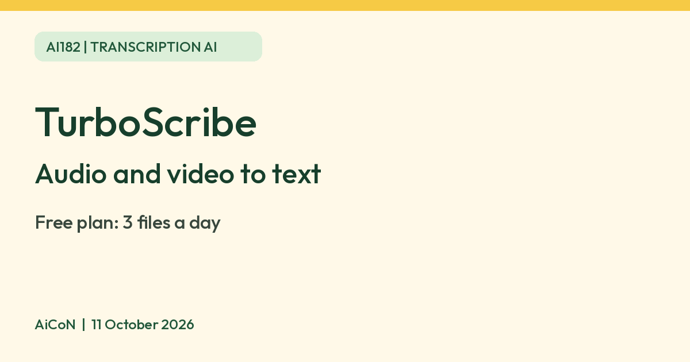

TurboScribe: free plan transcribes 3 files a day, up to 30 minutes each
TurboScribe turns audio and video into text. The free plan allows 3 files a day, up to 30 minutes each, and Unlimited is $10 a month billed yearly, about 970 rupees.

What it is
TurboScribe turns audio and video files into text. Its own pages say it is powered by AI and by Whisper speech-to-text technology, and that it runs transcription on machines it owns or controls rather than through third-party transcription services.
Is it free
Yes, with limits. TurboScribe's pricing page lists a Free plan as "100% Free": 3 transcripts a day, each file up to 30 minutes, one file uploaded at a time, and lower priority, so you wait longer for results. The Unlimited plan is $10 a month when billed yearly, which is $120 a year (about ₹970 a month, or about ₹11,600 a year, using an illustrative ₹96.8/USD conversion, not a verified Indian checkout rate). Unlimited allows files up to 10 hours or 5 GB, 50 files at a time, and translation to 134+ languages. The pricing page does not show translation on the Free plan. The annual offer is an upfront $120 charge, not twelve separate $10 payments. Confirm taxes, currency conversion, renewal, cancellation and refund conditions at checkout before paying; we did not verify those checkout terms.
Is it available in India
We could not confirm this. The checked pages do not establish India-specific signup or checkout availability. We did not sign up, upload a file or inspect an Indian checkout.
How to try it
- Sign up for the free plan with an email address. Start with a short recording you own or have permission to upload, not a confidential meeting.
- Upload one audio or video file of up to 30 minutes.
- Wait for the transcript, then check it against the audio. Review names, dates, numbers, speaker changes and mixed-language passages before using it as a record. Save a copy before deleting files; deletion cannot be reversed.
Limits to know
- Three files a day, 30 minutes each, is about 90 minutes of audio a day at most on the Free plan.
- TurboScribe says your files are encrypted at rest, that only you can view them unless you share them, and that it does not train AI models on your media files or transcripts.
- Its privacy policy says it keeps your content while your account is active unless you delete it. Deleted content is purged within 90 days, accounting for backups.
- AiCoN advice: do not upload private or confidential recordings unless you have the speakers' permission and are comfortable with them being stored on a third-party service. Its primary infrastructure is in the United States. In-house transcription does not mean no subprocessors: the privacy policy describes cloud/analytics providers and lawful access. We did not verify a healthcare compliance agreement or client-specific confidentiality requirements.
- We did not test it ourselves, so check transcript accuracy yourself, especially for names and numbers.
The security FAQ says account deletion immediately removes files; the privacy policy separately allows up to 90 days for complete purge including backups. Treat immediate removal as loss of account access, not proof every backup copy is already gone. The published privacy policy is dated August 2022 and the security FAQ March 2025; both were checked on 11 October 2026.
Frequently asked questions
Is TurboScribe free?
Yes. The Free plan allows 3 transcripts a day, each up to 30 minutes. Unlimited is $10 a month billed yearly, about ₹970 a month.
Sources: TurboScribe pricing, TurboScribe privacy policy, Security and privacy FAQ. Checked 11 October 2026.